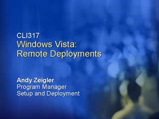
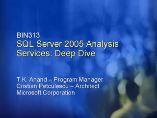
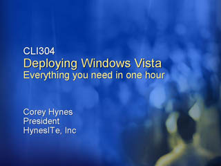
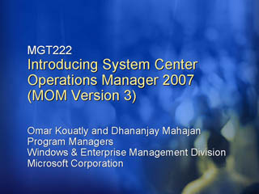
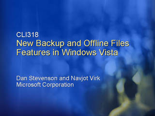
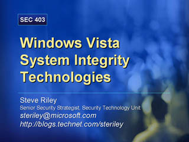

Windows Vista: Securing Wireless Networks
Speaker(s): Taranjeet Athwal
Anti-Malware Technologies in Windows Vista
Speaker(s): Adam Overton
Building Reliability into Windows Vista
Speaker(s): David Zipkin,Elsie Nallipogu
Account Control: Running Windows Vista with Least Privilege
Speaker(s): Steve Hiskey
Windows Vista: Remote Deployments

Speaker(s): Andy Zeigler
Windows PowerShell: Next Generation Command Line Scripting
Speaker(s): Jeffrey Snover
Windows Vista Security Guide
Speaker(s): Mike Danseglio
SQL Server 2005 Analysis Services: Deep Dive

Speaker(s): TK Anand, Cristian Petculescu
Ten Reasons to Prepare for Windows Server Code Named "Longhorn"
Speaker(s): Ward Ralston
Image Engineering: Creating Your Perfect Windows Vista Desktop
Speaker(s): Joe Morris
Scripting for IT Professionals Who Can't Write Code
Speaker(s): Corey Hynes
Microsoft IT: Deploying Windows Vista
Speaker(s): Chad Lewis
Deploying Windows Vista: Everything You Need in One Hour

Speaker(s): Corey Hynes
Introducing System Center Operations Manager 2007

Speaker(s): Dhananjay Mahajan, Omar Kouatly
Next Generation Networking Features
Speaker(s): Chris Mitchell, Ian Hameroff
New Backup and Offline Files Features in Windows Vista

Speaker(s): Navjot Virk, Dan Stevenson
Troubleshooting Group Policy
Speaker(s): Derek Melber
Group Policy: What's New in Windows Vista
 Speaker(s): Mark Williams
Speaker(s): Mark Williams
Windows Vista System Integrity Technologies

Speaker(s): Steve Riley